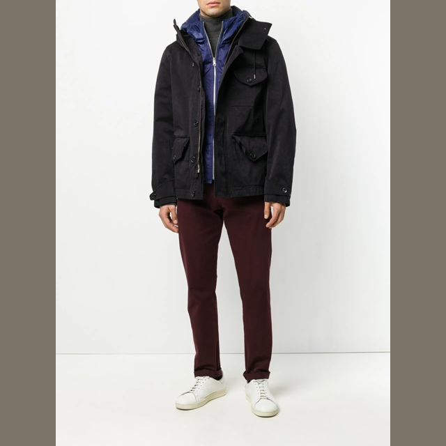
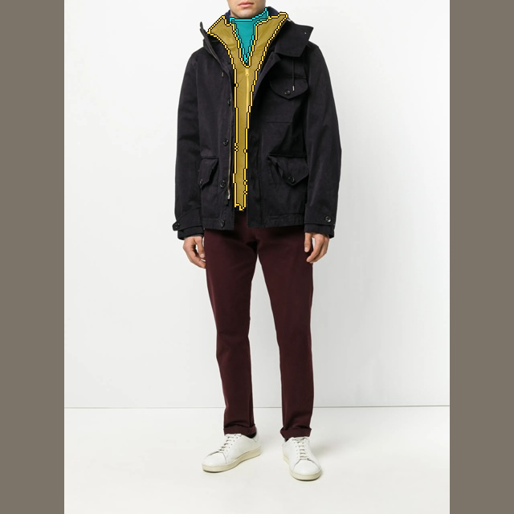
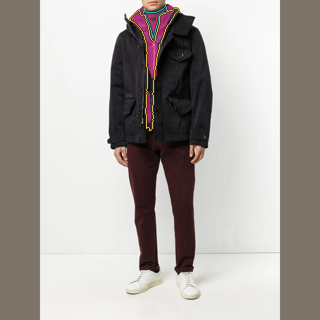
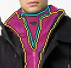
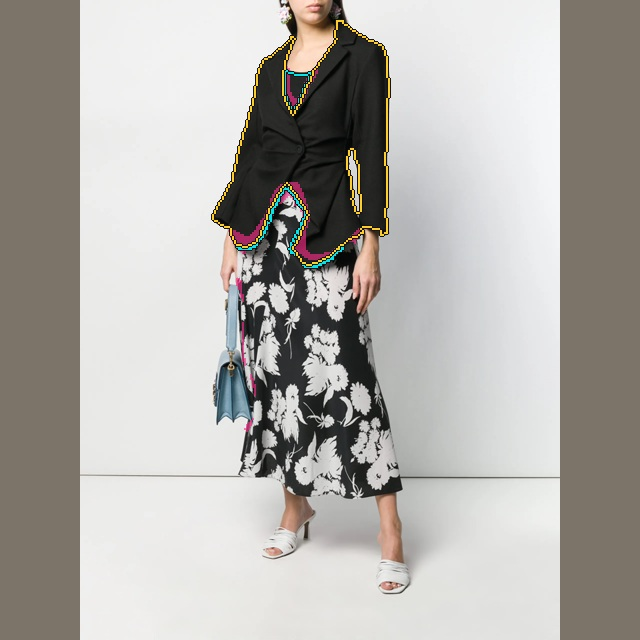
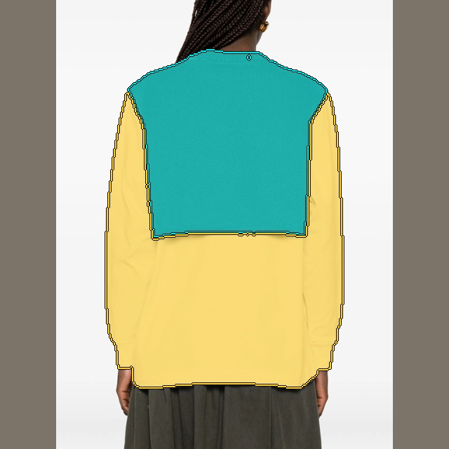
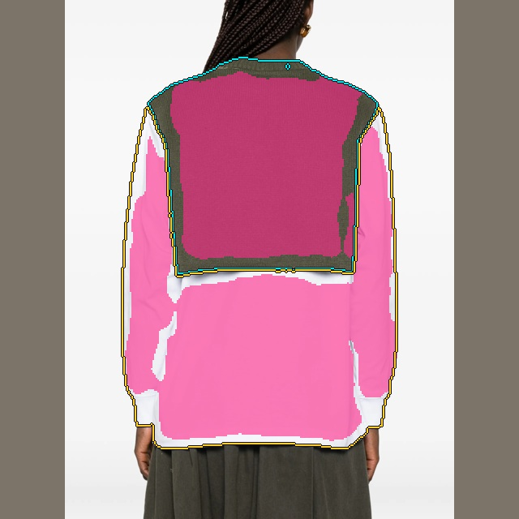
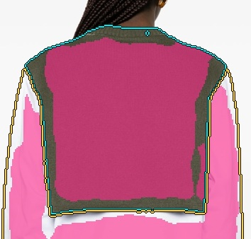

The student detects much of the garment foreground, but assigns pieces to the wrong regions. Two mistakes in my training setup made this worse: fragmented training targets and a query expansion that disrupted the starting model.
Diagnosis of the September 26 pilot. Read-only audit of 18,511 training images; decoder counterfactuals on all 490 validation images; four named examples; five saved checkpoints per arm. No retraining or promotion.
Confirmed target construction fault
1. Border remnants became full garment targets
I combined the fine clothing export with a separate accessory export by subtracting all clothing pixels from each accessory mask, then giving every nonempty remainder a new region ID. A shoe or bag already present in the clothing export could therefore leave a thin edge that became another “garment.” Duplicate objects were never associated across exports.
20,874 added accessory regions contain 64 pixels or fewer at 320 × 320. They occupy only 0.038% of foreground pixels, but account for 19.1% of all region-level CE terms in the training-store census. The loss averages each region’s pixel loss before averaging regions: a one-pixel remnant receives one full region term, just like a collar or coat. Dice also averages by region.
10,959 added regions came from accessory masks overlapping an existing clothing region at IoU above 0.7. Mean target count increased from 3.13 to 5.91 regions per image. This is a confirmed supervision defect and a plausible source of excess splitting; its exact contribution to trained regression requires an isolated training ablation.
19.1% describes target counts under uniform exposure, not measured gradient magnitude or the exact weighted mixture used by B. Tiny genuine jewellery and fine garment portions should remain; duplicate residuals need identity association, not indiscriminate size filtering.
Controlled causal check
2. Expanding 8 → 24 queries broke the warm start
Copying the original eight query vectors did not preserve the original head. Each query attends to the other queries, so adding sixteen random ones changed the original eight outputs immediately. Removing the new slots only at decoding did not undo that interference.
Before any training · region IoU
Zanone collar
White tank
Black tank
GR10K vest
Original 8-query head
0.234
0.494
0.323
0.551
24 queries; decode original 8 only
0.000
0.213
0.317
0.551
24 queries; isolate original 8 in self-attention
0.234
0.494
0.323
0.551
When the original queries could attend only to the original eight, all four label maps matched the baseline exactly. Mean absolute change in the original logits fell from 0.208 to 0.00000113. This isolates a real initialization mistake. It does not, by itself, quantify how much of the final trained failure came from initialization.
What the model actually groups together
These are the original saved B outputs, not rerendered inference. Cyan marks the requested piece; gold marks the other piece it should separate from. Pink shows the single predicted query owning most pixels of the requested piece. This is an ownership diagnostic, not a new matching score.
Requested reference pieceDifferent reference pieceOne predicted region
Zanone collar
Image

Two reference pieces

One predicted region · query 23

Detail of the same prediction

99.6% of the requested piece is detected as foreground. Query 23 owns 241 of its 277 pixels, but also 1,012 pixels of the layer beneath the coat. The pink fill is one entire predicted region, including disconnected fragments.
White D&G tank
ImageTwo reference piecesOne predicted region · query 12Detail of the same prediction
93.1% of the requested piece is detected as foreground. Query 12 owns 334 of its 554 pixels, but also 1,393 pixels of the handbag. The pink fill is one entire predicted region, including disconnected fragments.
Black D&G tank
ImageTwo reference piecesOne predicted region · query 3

Detail of the same prediction
99.7% of the requested piece is detected as foreground. Query 3 owns 161 of its 350 pixels, but also 394 pixels of the blazer. The pink fill is one entire predicted region, including disconnected fragments.
GR10K vest-looking layer
ImageTwo reference pieces

One predicted region · query 1

Detail of the same prediction

99.8% of the requested piece is detected as foreground. Query 1 owns 11,500 of its 14,785 pixels, but also 17,487 pixels of the shirt-looking layer. The pink fill is one entire predicted region, including disconnected fragments.
Why a threshold change will not rescue it
All-query decoding barely changes these examples. Even giving B the reference foreground or the reference number of regions leaves major grouping errors. The learned partition must change.
Forward-only check
PQ, 490 images
Hard recall
Collar IoU
White tank IoU
Black tank IoU
Vest IoU
B, normal decoding
0.276
0.150
0.038
0.130
0.184
0.124
B, all queries enabled
0.271
0.150
0.038
0.130
0.184
0.124
B, existence threshold 0.9
0.348
0.101
0.000
0.000
0.000
0.000
B, perfect reference foreground*
0.351
0.234
0.051
0.176
0.177
0.124
B, reference region count*
0.345
0.144
0.038
0.216
0.185
0.151
* Oracle probes use reference information unavailable in deployment. Scores in this table use one consistent RTX 5090 probe. Named tokens were re-extracted with the same pinned C-RADIO revision; BF16/device/batch differences can move scores relative to the original H200 report. The initialization control above uses float32 with TF32 disabled. Compare conditions within each table.
More updates were not a consistent remedy
B’s collar briefly improved, then regressed; its GR10K vest deteriorated across the five inspected checkpoints. Better average hard-region recall did not imply better grouping on the requested examples.
B updates
Collar IoU
White tank IoU
Black tank IoU
Vest IoU
250
0.000
0.109
0.260
0.324
500
0.418
0.023
0.110
0.248
1000
0.038
0.061
0.154
0.230
1500
0.359
0.111
0.185
0.195
2000
0.038
0.130
0.183
0.126
Checkpoint probes used the original H200 feature files and all four named images. Their accompanying aggregate validation scores cover a fixed 49-image subset, not all 490. Only the five listed checkpoints per arm were examined; this is not a claim that every intermediate checkpoint was bad.
What must change before another long run
Repair instance identities in the targets. Associate duplicate clothing/accessory proposals before ownership arbitration. Keep valid small portions, union residuals into their associated object, and preserve full foreground coverage without inventing border instances.
Preserve the starting predictions. Begin with an unchanged eight-query control; if more slots are needed, introduce them with protected interactions and verify zero initial regression.
Rebalance and isolate the training changes. Bound the influence of tiny residual regions, preserve confident easy-region predictions, and test target repair, loss changes and query expansion separately. Hard-example sampling alone did not fix the task.
Gate on correct grouping. Use a broader held-out appearance-based set covering collar/layer separation and disconnected wrong-object assignments, together with easy controls and full validation. The named cases stay held out. Automatic teacher labels need consistency checks; human labels are not required.
No replacement model is promoted. The original run remains archived. These diagnostics establish two setup faults and the observed failure mode; they do not establish that the C-RADIO backbone lacks the necessary information or that more model capacity would fix it.